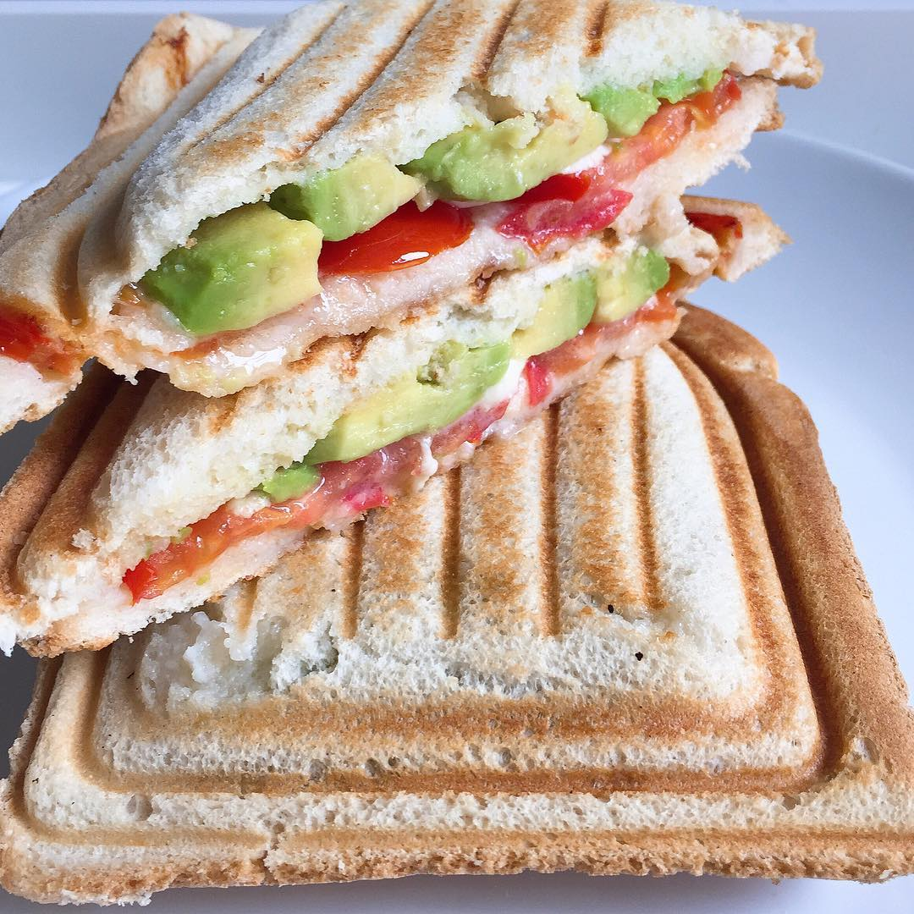

| Nom des plats | Illustration | ingredient | temps |
|---|---|---|---|
| croque monsieur mozarella, avocat, tomate |  | -2 tranche de pain de mie -1 avacat -mozarella -tomate -Huile d'olive -beurre -sel -poivron |
🕑 15 min |
| Quesadilla |
-Tortilla -poulet -fromage rapé -créme fraiche -huile d'olive -sel |
🕑 30 min | |
| Pommes de terre sautées dorées et croustillante |
-6 Pommes de terre à chair ferme -3 cuillere à soupe d'huile d'olive -sel -un peu d'ail |
🕑 45 min |